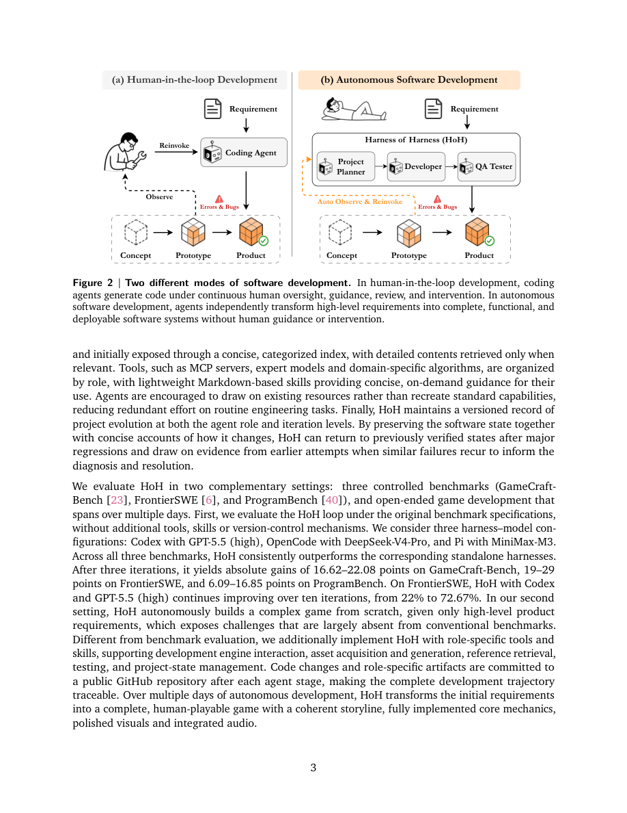

#1
★ 8/10
Harness-of-Harness: Multi-Day Autonomous Software Development with Continual Improvement
Harness-of-Harness: Multi-Day Autonomous Software Development with Continual Improvement

图 Figure · Page 3 of paper
🎯 （AI 中文深度分析暂不可用：Anthropic API 额度不足。英文栏为论文原文摘要，下方链接均可正常访问。）
This paper studies autonomous software development, in which LLM-based coding agents transform high-level requirements into complete, functional, and usable software systems without human intervention
| 维度 | 中文 | English |
|---|---|---|
| ❓ 待解决 的问题 |
（AI 中文深度分析暂不可用：Anthropic API 额度不足。英文栏为论文原文摘要，下方链接均可正常访问。） | This paper studies autonomous software development, in which LLM-based coding agents transform high-level requirements into complete, functional, and usable software systems without human intervention. We introduce Harness-of-Harness (HoH), a framework that enables coding agents to continually improve software during autonomous development. HoH operates on existing coding-agent harnesses, and organizes their executions into iterative planning-coding-testing loops. To sustain improvement across loops, HoH balances repair with capability growth, scopes development into small and verifiable increments, separates implementation-time testing from independent evaluation, and constrains verifiable outputs rather than prescribing agent workflows. It progressively exposes deliverables, role-specific tools, and skills, encourages reuse rather than recreation, and maintains versioned project histories. On GameCraft-Bench, FrontierSWE, and ProgramBench, three harness-model pairs (Codex with GPT-5.5, OpenCode with DeepSeek-V4-Pro, and Pi with MiniMax-M3), HoH consistently outperforms the corresponding standalone harnesses, achieving an average relative gain of 52.25 percent and a maximum gain of 82.86 percent after three iterations. In a multi-day deployment with more than 70 iterations, HoH autonomously develops a first-person-shooter game, featuring a coherent storyline, fully implemented core mechanics, human-playable experience, polished visuals and integrated audio. Github: https://github.com/Flesymeb/HarnessOfHarness Project Page: https://flesymeb.github.io/HarnessOfHarness/ |
| 💡 解决 的亮点 |
（AI 中文深度分析暂不可用：Anthropic API 额度不足。英文栏为论文原文摘要，下方链接均可正常访问。） | See the paper’s original abstract in the "Problem / 背景" row above. |
| 🧪 实验 内容 |
（AI 中文深度分析暂不可用：Anthropic API 额度不足。英文栏为论文原文摘要，下方链接均可正常访问。） | See the paper’s original abstract in the "Problem / 背景" row above. |
| 📊 实验 结果 |
（AI 中文深度分析暂不可用：Anthropic API 额度不足。英文栏为论文原文摘要，下方链接均可正常访问。） | See the paper’s original abstract in the "Problem / 背景" row above. |
| 🏁 结论 | （AI 中文深度分析暂不可用：Anthropic API 额度不足。英文栏为论文原文摘要，下方链接均可正常访问。） | See the paper’s original abstract in the "Problem / 背景" row above. |
| 🔗 论文 链接 |
arXiv: 2609.01481v1 · 📥 PDF | |
⚙️ Method · 方法详解
（AI 中文深度分析暂不可用：Anthropic API 额度不足。英文栏为论文原文摘要，下方链接均可正常访问。）
See the paper’s original abstract in the "Problem / 背景" row above.
🌟 Why It Matters · 为什么重要
（AI 中文深度分析暂不可用：Anthropic API 额度不足。英文栏为论文原文摘要，下方链接均可正常访问。）
See the paper’s original abstract in the "Problem / 背景" row above.